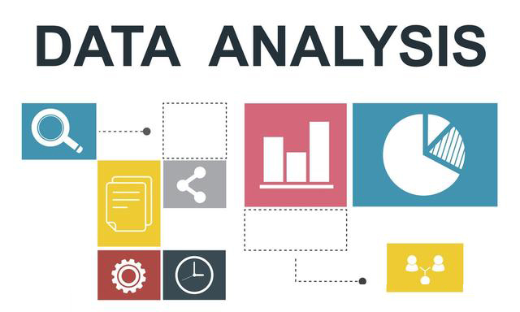

<!DOCTYPE html><html><head><meta charset="utf-8"><title>人工智能、机器学习、数据挖掘以及数据分析有什么联系？（下） | 技术学派</title><meta name="viewport" content="width=device-width,initial-scale=1,maximum-scale=1"><meta name="keywords" content="IT培训, Python, 大数据, 人工智能, Web前端, PHP, python"><meta name="description" content="3.深度学习深度学习的概念源于人工神经网络的研究。含多隐层的多层感知器就是一种深度学习结构。深度学习通过组合低层特征形成更加抽象的高层表示属性类别或特征，以发现数据的分布式特征表示。晦涩难懂的概念，略微有些难以理解，但是在其高冷的背后，却有深远的应用场景和未来。那深度学习和机器学习是什么关系呢？深度学习是实现机器学习的一种方式和一条路径。其动机在于建立、模拟人脑进行分析学习的神经网络，它模仿人脑的"><meta name="keywords" content="python"><meta property="og:type" content="article"><meta property="og:title" content="人工智能、机器学习、数据挖掘以及数据分析有什么联系？（下）"><meta property="og:url" content="http://www.JiShuXuePai.com/blog/学习答疑/学习答疑/人工智能、机器学习、数据挖掘以及数据分析有什么联系？（下）/index.html"><meta property="og:site_name" content="技术学派"><meta property="og:description" content="3.深度学习深度学习的概念源于人工神经网络的研究。含多隐层的多层感知器就是一种深度学习结构。深度学习通过组合低层特征形成更加抽象的高层表示属性类别或特征，以发现数据的分布式特征表示。晦涩难懂的概念，略微有些难以理解，但是在其高冷的背后，却有深远的应用场景和未来。那深度学习和机器学习是什么关系呢？深度学习是实现机器学习的一种方式和一条路径。其动机在于建立、模拟人脑进行分析学习的神经网络，它模仿人脑的"><meta property="og:locale" content="zh-CN"><meta property="og:image" content="http://www.jishuxuepai.com/blog/学习答疑/学习答疑/人工智能、机器学习、数据挖掘以及数据分析有什么联系？（下）/01.jpg"><meta property="og:updated_time" content="2018-07-06T07:58:29.000Z"><meta name="twitter:card" content="summary"><meta name="twitter:title" content="人工智能、机器学习、数据挖掘以及数据分析有什么联系？（下）"><meta name="twitter:description" content="3.深度学习深度学习的概念源于人工神经网络的研究。含多隐层的多层感知器就是一种深度学习结构。深度学习通过组合低层特征形成更加抽象的高层表示属性类别或特征，以发现数据的分布式特征表示。晦涩难懂的概念，略微有些难以理解，但是在其高冷的背后，却有深远的应用场景和未来。那深度学习和机器学习是什么关系呢？深度学习是实现机器学习的一种方式和一条路径。其动机在于建立、模拟人脑进行分析学习的神经网络，它模仿人脑的"><meta name="twitter:image" content="http://www.jishuxuepai.com/blog/学习答疑/学习答疑/人工智能、机器学习、数据挖掘以及数据分析有什么联系？（下）/01.jpg"><link rel="stylesheet" href="/libs/bootstrap/bootstrap-grid.css"><link rel="stylesheet" href="/libs/font-awesome/css/font-awesome.min.css"><link rel="stylesheet" href="/libs/titillium-web/styles.css"><link rel="stylesheet" href="/libs/source-code-pro/styles.css"><link rel="stylesheet" href="/css/style.css"><script src="/libs/jquery/jquery.min.js"></script><link rel="stylesheet" href="/libs/lightgallery/css/lightgallery.min.css"><link rel="stylesheet" href="/libs/justified-gallery/justifiedGallery.min.css"><script>var _hmt=_hmt||[];!function(){var e=document.createElement("script");e.src="//hm.baidu.com/hm.js?4c1bd812de3c30edbaa2b803c66f0a04";var t=document.getElementsByTagName("script")[0];t.parentNode.insertBefore(e,t)}()</script></head></html><body><div id="wrap"><header id="header"><div id="header-outer" class="outer"><div class="container"><div class="container-inner"><div id="header-title"><h1 class="logo-wrap"><a href="/" class="logo"></a></h1></div><div id="header-inner" class="nav-container"><a id="main-nav-toggle" class="nav-icon fa fa-bars">菜单</a><div class="nav-container-inner"><ul id="main-nav"><li class="main-nav-list-item"><a class="main-nav-list-link" href="/">主页</a></li><li class="main-nav-list-item"><a class="main-nav-list-link" href="/edu/index.html">学编程</a></li><li class="main-nav-list-item"><a class="main-nav-list-link" href="/blog/">博客</a></li><li class="main-nav-list-item"><a class="main-nav-list-link" href="/tips.html">学习建议</a></li><li class="main-nav-list-item"><a class="main-nav-list-link" href="/about.html">关于</a></li></ul><nav id="sub-nav"><div id="search-form-wrap"><form class="search-form"><input type="text" class="ins-search-input search-form-input" placeholder="搜索"> <button type="submit" class="search-form-submit"></button></form><div class="ins-search"><div class="ins-search-mask"></div><div class="ins-search-container"><div class="ins-input-wrapper"><input type="text" class="ins-search-input" placeholder="想要查找什么..."> <span class="ins-close ins-selectable"><i class="fa fa-times-circle"></i></span></div><div class="ins-section-wrapper"><div class="ins-section-container"></div></div></div></div><script>window.INSIGHT_CONFIG={TRANSLATION:{POSTS:"文章",PAGES:"页面",CATEGORIES:"分类",TAGS:"标签",UNTITLED:"(未命名)"},ROOT_URL:"/",CONTENT_URL:"/content.json"}</script><script src="/js/insight.js"></script></div></nav></div></div></div></div></div></header><div class="container"><div class="main-body container-inner"><div class="main-body-inner"><section id="main"><div class="main-body-header"><h1 class="header"><a class="page-title-link" href="/categories/学习答疑/">学习答疑</a><div class="author"></div></h1></div><div class="main-body-content"><article id="post-学习答疑/人工智能、机器学习、数据挖掘以及数据分析有什么联系？（下）" class="article article-single article-type-post" itemscope itemprop="blogPost"><div class="article-inner"><header class="article-header"><h1 class="article-title" itemprop="name">人工智能、机器学习、数据挖掘以及数据分析有什么联系？（下）</h1></header><div class="article-meta"><div class="article-date"><a href="/blog/学习答疑/学习答疑/人工智能、机器学习、数据挖掘以及数据分析有什么联系？（下）/" class="article-date"><time datetime="2018-07-05T03:47:03.051Z" itemprop="datePublished">2018-07-05</time></a></div><div class="article-tag"><i class="fa fa-tag"></i> <a class="tag-link" href="/tags/python/">python</a></div></div><div class="article-entry" itemprop="articleBody"><h3 id="3-深度学习"><a href="#3-深度学习" class="headerlink" title="3.深度学习"></a>3.深度学习</h3><p>深度学习的概念源于人工神经网络的研究。含多隐层的多层感知器就是一种深度学习结构。深度学习通过组合低层特征形成更加抽象的高层表示属性类别或特征，以发现数据的分布式特征表示。晦涩难懂的概念，略微有些难以理解，但是在其高冷的背后，却有深远的应用场景和未来。</p><p>那深度学习和机器学习是什么关系呢？</p><p>深度学习是实现机器学习的一种方式和一条路径。其动机在于建立、模拟人脑进行分析学习的神经网络，它模仿人脑的机制来解释数据。比如其按特定的物理距离连接；而深度学习使用独立的层、连接，还有数据传播方向，比如最近大火的卷积神经网络是第一个真正多层结构学习算法，它利用空间相对关系减少参数数目以提高训练性能，让机器认知过程逐层进行，逐步抽象，从而大幅度提升识别的准确性和效率。</p><p><strong>神经网络</strong>是<strong>机器学习</strong>的一个<strong>分支</strong>，而<strong>深度学习又是神经网络的一个大分支</strong>，深度学习的<strong>基本结构</strong>是<strong>深度神经网络</strong>。</p><h3 id="4-数据分析"><a href="#4-数据分析" class="headerlink" title="4.数据分析"></a>4.数据分析</h3><p>数据分析的概念；基于数据库系统和应用程序，可以直观的查看统计分析系统中的数据，从而可以很快得到我们想要的结果；这个就是最基本的数据分析功能，也是我们在信息化时代了，除了重构业务流程、提升行业效率和降低成本之外，另一个非常重要的数据分析功能，数据可视化。</p><p>比如说，在财务系统的信息化中，基于企业的财务系统，我们可以直观获取企业现金流量表、资产负债表和利润表，这些都来自与我们的数据分析技术。数据分析目前常用的软件是Excel, R, Python等工具。</p><p>数据分析更多的是指从历史数据里面发现有价值的信息，从而提高决策的科学性。数据分析更侧重于通过分析数据的历史分布然后从中得出一些有价值的信息。</p><p>在对比数据分析和数据挖掘时，数据分析则更像是对历史数据的一个统计分析过程，比如我们可以对历史数据进行分析后得到一个粗糙的结论，但当我们想要深入探索为什么会出现这个结论时，就需要进行数据挖掘，探索引起这个结论的种种因素，然后建立起结论和因素之间模型，当有因素有新的值出现时，我们就可以利用这个模型去预测可能产生的结论。</p><p>因此数据分析更像是数据挖掘的一个<strong>中间过程</strong>。</p><p></p><h3 id="5-总结"><a href="#5-总结" class="headerlink" title="5.总结"></a>5.总结</h3><p><strong>人工智能与机器学习、深度学习的关系</strong></p><p>严格意义上说，人工智能和机器学习没有直接关系，只不过是机器学习的方法被大量的应用于解决人工智能的问题而已。目前机器学习是人工智能的一种实现方式，也是最重要的实现方式。</p><p>深度学习是机器学习比较火的一个方向，其本身是神经网络算法的衍生，在图像、语音等富媒体的分类和识别上取得了非常好的效果。</p><p><strong>数据挖掘与机器学习的关系</strong></p><p>数据挖掘主要利用机器学习界提供的技术来分析海量数据，利用数据库界提供的技术来管理海量数据。</p><p>机器学习是数据挖掘的一种重要方法，但机器学习是另一门学科，并不从属于数据挖掘，二者相辅相成。</p><p>深度学习、机器学习的发展带了许多实际的商业应用，让虚幻的AI逐步落地，进而影响人类社会发展；</p><p>深度学习、机器学习以及未来的AI技术，将让无人驾驶汽车、更好的预防性治疗技术、更发达智能的疾病治疗诊断系统、更好的人类生活娱乐辅助推荐系统等，逐步融入人类社会的方方面面。</p><p>AI即使是现在，也是未来，不再是一种科幻影像和概念，业界变成了人类社会当下的一种存在，不管人类是否喜欢或者理解，他们都将革命性地改变创造AI的我们人类自身；</p><p><strong>文中若有表述错误的地方欢迎大家留言批评指正。</strong></p></div><footer class="article-footer"><a data-url="http://www.JiShuXuePai.com/blog/学习答疑/学习答疑/人工智能、机器学习、数据挖掘以及数据分析有什么联系？（下）/" data-id="cjjgevllj004dz8fyu7b0yqjp" class="article-share-link"><i class="fa fa-share"></i>分享到</a><script>!function(n){n("body").on("click",function(){n(".article-share-box.on").removeClass("on")}).on("click",".article-share-link",function(t){t.stopPropagation();var e,a=n(this),o=a.attr("data-url"),r=encodeURIComponent(o),i="article-share-box-"+a.attr("data-id"),s=a.offset();if(n("#"+i).length){if((e=n("#"+i)).hasClass("on"))return void e.removeClass("on")}else{var l=['<div id="'+i+'" class="article-share-box">','<input class="article-share-input" value="'+o+'">','<div class="article-share-links">','<a href="https://twitter.com/intent/tweet?url='+r+'" class="article-share-twitter" target="_blank" title="Twitter"></a>','<a href="https://www.facebook.com/sharer.php?u='+r+'" class="article-share-facebook" target="_blank" title="Facebook"></a>','<a href="http://pinterest.com/pin/create/button/?url='+r+'" class="article-share-pinterest" target="_blank" title="Pinterest"></a>','<a href="https://plus.google.com/share?url='+r+'" class="article-share-google" target="_blank" title="Google+"></a>',"</div>","</div>"].join("");e=n(l),n("body").append(e)}n(".article-share-box.on").hide(),e.css({top:s.top+25,left:s.left}).addClass("on")}).on("click",".article-share-box",function(t){t.stopPropagation()}).on("click",".article-share-box-input",function(){n(this).select()}).on("click",".article-share-box-link",function(t){t.preventDefault(),t.stopPropagation(),window.open(this.href,"article-share-box-window-"+Date.now(),"width=500,height=450")})}(jQuery)</script></footer></div></article><section id="comments"><div id="gitalk_frame"></div></section></div></section><aside id="sidebar"><a class="sidebar-toggle" title="Expand Sidebar"><i class="toggle icon"></i></a><div class="sidebar-top"><p>关注我 :</p><ul class="social-links"><li><a class="social-tooltip" title="火星时代" href="http://edu.hxsd.com/edunew/topics/webfull/index.html" target="_blank"><i class="icon fa fa-dribbble"></i></a></li><li><a class="social-tooltip" title="weibo" href="#" target="_blank"><i class="icon fa fa-weibo"></i></a></li><li><a class="social-tooltip" title="rss" href="/atom.xml" target="_blank"><i class="icon fa fa-rss"></i></a></li></ul></div><nav id="article-nav"><a href="/blog/学习答疑/学习答疑/数据分析师的未来就业前景怎么样？/" id="article-nav-newer" class="article-nav-link-wrap"><strong class="article-nav-caption">下一篇</strong><p class="article-nav-title">数据分析师的未来就业前景怎么样？</p><i class="icon fa fa-chevron-right" id="icon-chevron-right"></i> </a><a href="/blog/学习答疑/学习答疑/Python与人工智能间有什么关系？Python相关职位的薪资是多少？/" id="article-nav-older" class="article-nav-link-wrap"><strong class="article-nav-caption">上一篇</strong><p class="article-nav-title">Python与人工智能间有什么关系？Python相关职位的薪资是多少？</p><i class="icon fa fa-chevron-left" id="icon-chevron-left"></i></a></nav><div class="widgets-container"><div class="widget-wrap widget-list"><h3 class="widget-title">分类</h3><div class="widget"><ul class="category-list"><li class="category-list-item"><a class="category-list-link" href="/categories/animate/">animate</a><span class="category-list-count">17</span></li><li class="category-list-item"><a class="category-list-link" href="/categories/git/">git</a><span class="category-list-count">1</span></li><li class="category-list-item"><a class="category-list-link" href="/categories/html/">html</a><span class="category-list-count">2</span></li><li class="category-list-item"><a class="category-list-link" href="/categories/js/">js</a><span class="category-list-count">5</span></li><li class="category-list-item"><a class="category-list-link" href="/categories/php/">php</a><span class="category-list-count">3</span></li><li class="category-list-item"><a class="category-list-link" href="/categories/vue/">vue</a><span class="category-list-count">1</span></li><li class="category-list-item"><a class="category-list-link" href="/categories/学习答疑/">学习答疑</a><span class="category-list-count">41</span></li><li class="category-list-item"><a class="category-list-link" href="/categories/插件资源库/">插件资源库</a><span class="category-list-count">4</span></li></ul></div></div><link rel="stylesheet" href="/css/tech/toc.css"><div class="widget-wrap widget-list widget-toc"><h3 class="widget-title">目录</h3><div class="widget"><div class="toc"></div><link rel="stylesheet" href="https://cdnjs.cloudflare.com/ajax/libs/tocbot/3.0.5/tocbot.css"><script src="https://cdnjs.cloudflare.com/ajax/libs/tocbot/3.0.5/tocbot.min.js"></script><script>$(function(){$(".main-body-content").find("h1,h2,h3").each(function(t){$(this).attr("id")||$(this).attr("id","list"+t)}),tocbot.init({tocSelector:".toc",contentSelector:".main-body-content",headingSelector:"h1, h2, h3",collapseDepth:2,positionFixedSelector:".widget-toc",fixedSidebarOffset:595,includeHtml:!1})})</script></div></div><div class="widget-wrap widget-list"><h3 class="widget-title">标签</h3><div class="widget"><ul class="tag-list"><li class="tag-list-item"><a class="tag-list-link" href="/tags/C/">C</a><span class="tag-list-count">2</span></li><li class="tag-list-item"><a class="tag-list-link" href="/tags/go/">go</a><span class="tag-list-count">1</span></li><li class="tag-list-item"><a class="tag-list-link" href="/tags/php/">php</a><span class="tag-list-count">1</span></li><li class="tag-list-item"><a class="tag-list-link" href="/tags/python/">python</a><span class="tag-list-count">17</span></li><li class="tag-list-item"><a class="tag-list-link" href="/tags/web前端/">web前端</a><span class="tag-list-count">2</span></li></ul></div></div><div class="widget-wrap widget-float"><h3 class="widget-title">标签云</h3><div class="widget tagcloud"><a href="/tags/C/" style="font-size:15px">C</a> <a href="/tags/go/" style="font-size:10px">go</a> <a href="/tags/php/" style="font-size:10px">php</a> <a href="/tags/python/" style="font-size:20px">python</a> <a href="/tags/web前端/" style="font-size:15px">web前端</a></div></div><div class="widget-wrap widget-list"><h3 class="widget-title">链接</h3><div class="widget"><ul><li><a href="http://edu.hxsd.com/edunew/topics/webfull/index.html">火星时代</a></li></ul></div></div></div></aside><script>$(function(){$(window).scroll(function(){240<=$(document).scrollTop()?($("#sidebar .sidebar-toggle").addClass("fix"),"block"==$("#sidebar .sidebar-toggle").css("display")&&$(".is-position-fixed").css("top","35px")):$("#sidebar .sidebar-toggle").removeClass("fix")})})</script></div></div></div><footer id="footer"><div class="top"><div class="inner"><div class="list"><div class="left clearfix"><dl><dt>关于我们</dt><dd><a href="/about.html" target="_blank">公司简介</a></dd><dd><a href="edu/index.html" target="_blank">联系我们</a></dd></dl><dl><dt>校区攻略</dt><dd><a href="edu/index.html" target="_blank">校区环境</a></dd><dd><a href="edu/index.html" target="_blank">住宿攻略</a></dd><dd><a href="edu/index.html" target="_blank">来校路线</a></dd></dl><dl><dt>课程培训</dt><dd><a href="edu/python.html" target="_blank">Python</a></dd><dd><a href="edu/python.html" target="_blank">Web前端</a></dd><dd><a href="edu/python.html" target="_blank">PHP</a></dd><dd><a href="edu/python.html" target="_blank">人工智能</a></dd><dd><a href="edu/python.html" target="_blank">大数据</a></dd></dl><dl><dt>常见问答</dt><dd><a href="edu/index.html" target="_blank">学费学时</a></dd><dd><a href="edu/index.html" target="_blank">学习方法</a></dd></dl></div></div><div class="tel"><tel>176-0025-8815</tel><span>北京市海淀区杏石口路81号火星时代大厦</span></div><div class="weixin"><div class="w1"> <span>头条号</span></div><div class="w1"> <span>官方微信</span></div></div></div></div><div class="bot">Copyright 2018 技术学派 京ICP备15015508号-3</div></footer><link rel="stylesheet" href="https://unpkg.com/gitalk/dist/gitalk.css"><script src="https://unpkg.com/gitalk/dist/gitalk.min.js"></script><script>var gitalk=new Gitalk({clientID:"2fbbb9980b49019d99a7",clientSecret:"152dd10e83ef6595761ea2185304f9ac8263573f",repo:"jsxp",owner:"li-kang",admin:["li-kang"]});gitalk.render("gitalk_frame")</script><script src="/libs/lightgallery/js/lightgallery.min.js"></script><script src="/libs/lightgallery/js/lg-thumbnail.min.js"></script><script src="/libs/lightgallery/js/lg-pager.min.js"></script><script src="/libs/lightgallery/js/lg-autoplay.min.js"></script><script src="/libs/lightgallery/js/lg-fullscreen.min.js"></script><script src="/libs/lightgallery/js/lg-zoom.min.js"></script><script src="/libs/lightgallery/js/lg-hash.min.js"></script><script src="/libs/lightgallery/js/lg-share.min.js"></script><script src="/libs/lightgallery/js/lg-video.min.js"></script><script src="/libs/justified-gallery/jquery.justifiedGallery.min.js"></script><script src="/js/main.js"></script></div></body>